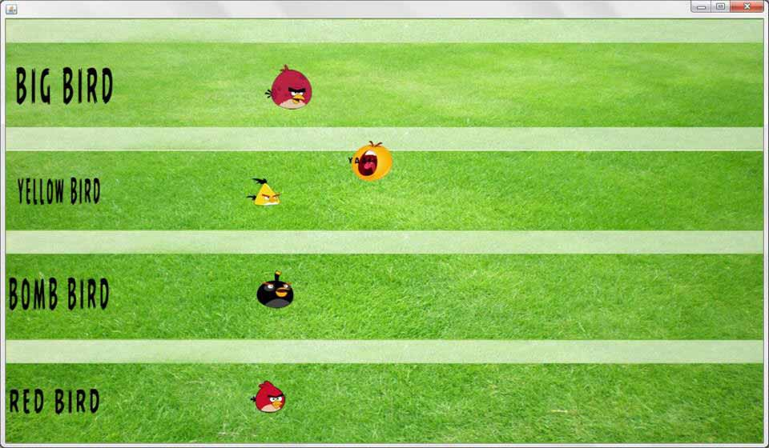

1.) Lo primero que se hizo fue realizar una ilustración del personaje final, para asi poder hacer sus vistas y poderlo modelar con esa base, para esto se usó Adobe Photoshop CS6

2.)teniendo el modelo 3D, el segundo paso es iniciar el modelado
